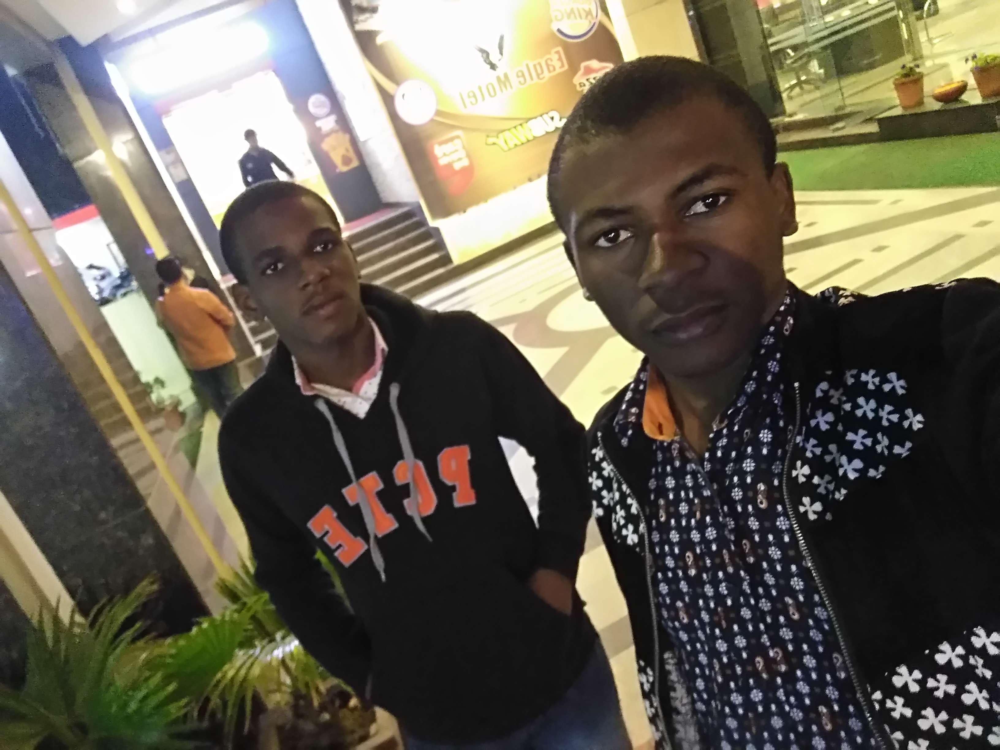
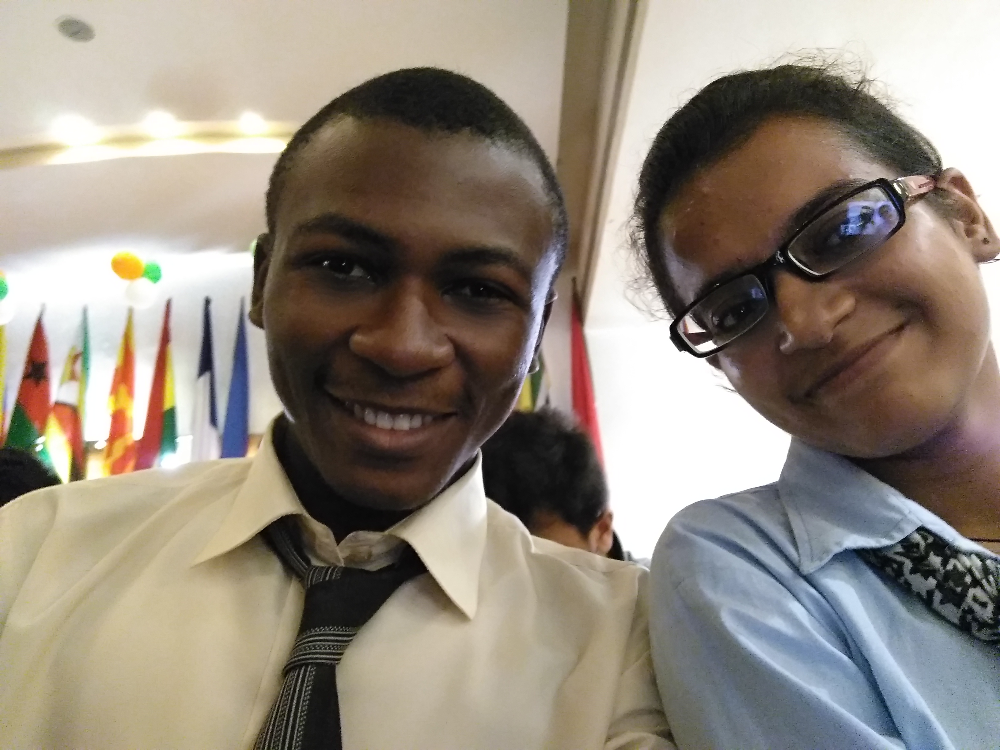

Every year, large numbers of students hop the big pond to study abroad in jolly ol' England. As one of the most accessible and well-known countries in the world.
2 April 2017 Last updated at 11:04
Study Aboard
Great Moments


that you know your options before you apply - you don't want to get a nasty surprise in
second year as your university prevents you from having the best year of your life!
We hope that the result of this will
be that universities put more effort into their year
abroad programme, giving many more students many more options to study, work or
volunteer abroad during their degree.
If you are considering doing an undergraduate degree at a UK university, it is quite likely that you have the option to study abroad whatever your degree course! (here are 100 reasons to study abroad, to remind you why it's so important to go...) Some universities are much more flexible and open to this than others though, so it's very important